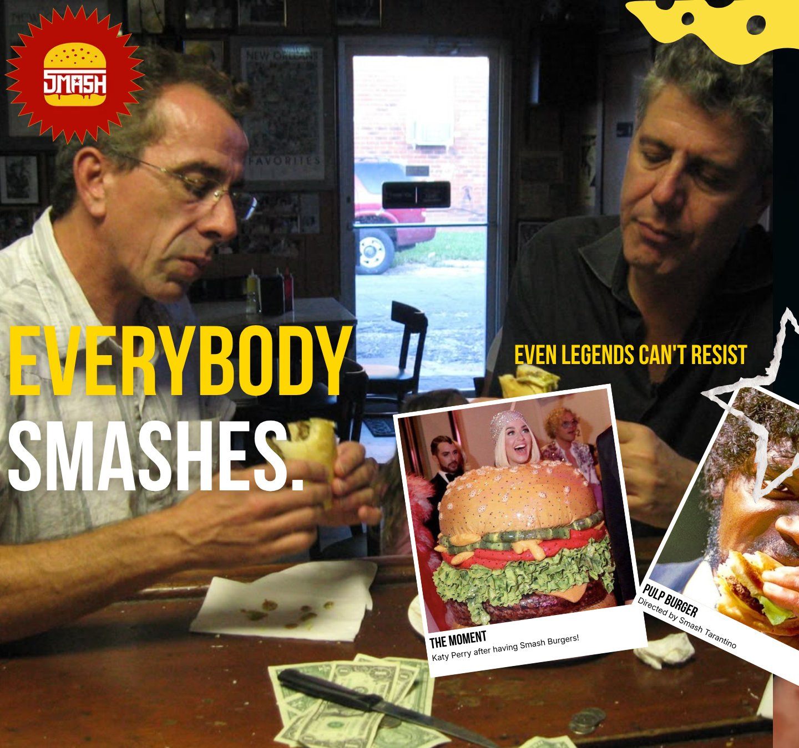
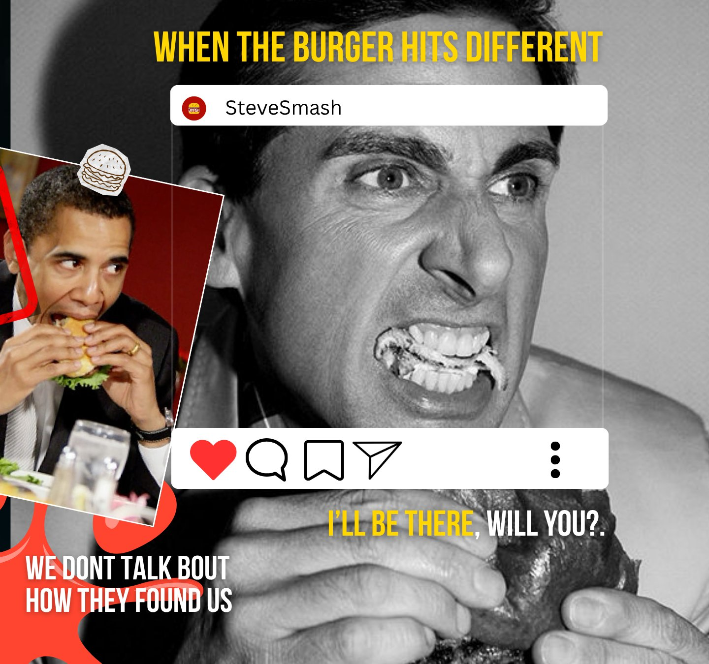

I am a growth marketer based in Bengaluru. My work lives at the intersection of data and creativity, where a well-placed piece of content can do as much work as a paid campaign, and a clean funnel can turn a casual visitor into a loyal customer.
Across five startups spanning events, fashion, real estate, ed-tech, and marketing tech, I have run end-to-end campaigns, managed creator pipelines, built landing pages, and tracked every click back to its source. I care about the numbers, and the story behind them.
Right now I lead content strategy as R&D Head at Synapse, Christ University, while competing in inter-collegiate business fests at an 86% win rate.
10K+
App Downloads Driven
86%
Inter-Fest Win Rate
5+
Startups Worked With
3K
Followers Grown in 3 Months
Featured Creative Work
Recent campaigns.

"Everybody Smashes." Social-first creative for Smash Burger, built around cultural references and pop-culture hooks.
"One Bite. You'll Know." Fan reactions layered with bold typography for maximum organic reach.

"When The Burger Hits Different" — Instagram-native social mockup designed for engagement and shareability.
What I Do
The full range.
✦
📈
Campaign Strategy
Full-funnel campaigns from awareness to conversion. Scaled apps to 10K+ downloads in a single month.
📌
Content and Brand
Copy, content pillars, and creative assets that stop the scroll. Brand voice in every caption, every post.
📊
Analytics and Growth
A/B testing, funnel drop-off analysis, and data-to-decision work that moves revenue, not just metrics.
🎯
Influencer and Creator Ops
Identifying, onboarding, and managing creators. Matching the right voice to the right brand at the right time.
🔗
SEO and Performance
Optimising listings, landing pages, and ad creatives. Organic growth and paid acquisition working together.
🏆
Cross-Functional Work
Keeping product, design, and client teams aligned on KPIs. Good marketing does not happen in a silo.
Led content strategy and research-driven campaigns, launching a social media series that reached 10K+ views and grew the club's following by 3K in three months.
Ran branding workshops and skill-building sessions to build internal campaign execution capacity.
Defined the content calendar, coordinated with design, and monitored performance to iterate on results.
Growth Marketing Intern
Solid Corp (MarTech), Bengaluru
Sept 2025 — Jan 2026
Led growth marketing for key clients, improving ROI through sharper audience targeting and creative iteration.
Ran A/B testing across ad creatives and landing pages, using funnel analytics to fix conversion drop-offs.
Coordinated between product, design, and client teams to keep campaigns aligned with KPI goals.
Growth and Operations Intern
Propalyst (Real Estate Tech), Bengaluru
Sept 2025 — Jan 2026
Streamlined property listings by coordinating with brokers and managing verification workflows.
Enhanced backend efficiency through structured processes and accurate data maintenance.
Supported listing content, local SEO, and campaign tracking initiatives.
Growth and Marketing Intern
Darshe (Premium Fashion), Bengaluru
Sept 2025 — Nov 2025
Managed the founder's social media presence, leading content planning and community engagement.
Built a pre-launch marketing roadmap covering content pillars and influencer coordination.
Drove organic growth through performance analytics, SEO, and hashtag strategy.
Marketing and Social Media Intern
Aavo (Event Management), Bengaluru
Sept 2024 — April 2025
Led digital campaigns scaling Aavo to 10K+ downloads and 1K+ followers within one month.
Conducted user behaviour analysis to identify growth levers and optimise engagement.
Created high-performing marketing assets and community-focused brand content.
Growth Intern
GenAIPeople (Ed Tech), Bengaluru
Dec 2025 — Present
Drove paid acquisition by developing and deploying digital ad creatives across channels.
Strengthened digital presence by building and optimising core web and landing assets.
Supported growth through performance monitoring and cross-functional execution.
★ Leadership & Achievements
Business Festing Team Member
CUSBMA, Christ University
July 2025 — Present
Competed in 10+ inter-collegiate business fests with an 86% win rate, leading team coordination and event strategy.
Handled on-ground execution under high-pressure, multi-competition conditions.
2nd Runner-Up — Aagaz (Street Play)
Mood Indigo, IIT Bombay — Play: "Charitra Ka Chitra"
Dec 2025
Secured 3rd place in the street play category at Mood Indigo, one of Asia's largest college cultural festivals.
Member of Zariya Productions; contributed to graphic design and poster work alongside performance.
3rd Position — Marketing Category
Cross-Currents, Mount Carmel College
Nov 2024
Earned placement for campaign ideation, brand positioning, and pitch performance.
Secretary General
BVBPSMUN, Hyderabad
Aug 2023
Led conference operations, chaired committees, and coordinated delegate management for the school's Model UN.
☮ Skills
Marketing and Growth
Campaign StrategyGrowth MarketingFunnel AnalyticsA/B TestingInfluencer OpsCreator OnboardingSEOPaid AcquisitionContent StrategySocial Media
Public SpeakingCreative WritingStrategyTime ManagementGraphic Design
☯ Certifications
Introduction to AI — Infosys
Generative AI Professional — Oracle
Work and Aspirations
The Portfolio
Some things are built. Some are earned. All of them took longer than a coffee.
Campaign Work
What I have built so far.
Social Media • Creative Direction
Smash Burger: Everybody Smashes
Brand • Typography
One Bite. You'll Know.
Event • Graphic Design
Zariya Productions: Street Play Poster
Aavo Event Management • 2024–2025
Scaling an event app from zero to 10K downloads
When I joined Aavo, the app had a product and almost no audience. I built the digital campaign strategy from scratch, identified the right communities, created a content system that kept posting consistent, and ran user behaviour analysis to understand what was converting. Within one month, we hit 10K downloads and crossed 1K followers. Distribution is as important as the product itself.
Synapse, Christ University • 2025–2026
Building a content engine that reached 10K views
As R&D Head at Synapse, I launched a research-led social media series. It reached 10K+ views and added 3K followers in three months. The work was not about posting more; it was about posting with a point of view, backed by data, timed around what the audience cared about.
Solid Corp MarTech • 2025–2026
A/B testing and funnel analytics for client accounts
At Solid Corp I worked across multiple client accounts, running A/B tests on ad creatives and landing pages, reading funnel analytics, and feeding insights back into targeting. Getting the invisible infrastructure right is the difference between a campaign that looks good and one that actually performs.
Creative Work
Zariya Productions — Street Play
Member of Zariya Productions. The play "Charitra Ka Chitra" won 2nd Runner-Up at Mood Indigo 2025, IIT Bombay. I contributed to graphic design and poster work alongside performance.
Mood Indigo, IIT Bombay • Dec 2025
2nd Runner-Up — Aagaz Street Play
One of Asia's largest cultural festivals. The team brought "Charitra Ka Chitra" to a live audience and placed in the top 3.
Video Work
Motion & storytelling.
Storytelling
Event Reel
Fast-Paced Edit
Montage
Storyboard
Typography-Based
Where I Want to Go
Industries that excite me.
Good marketing requires genuine obsession with the product. These are the three industries I am genuinely obsessed with.
🎬
Film and Entertainment
I watch a lot of films and have opinions about how they are marketed. A trailer can make or break a release. A well-timed social moment can turn a mid-budget film into a cultural event. I want to work on those campaigns, from theatrical releases to OTT drops.
👔
Fashion and Lifestyle
I worked with Darshe, a premium fashion brand, building their social presence and pre-launch roadmap. The work that interests me most is brand positioning. The difference between a label that is just a product and one that carries an identity is almost entirely a marketing problem.
☕
Food and Hospitality
The Smash Burger creative work showed me how much range exists in food content when you approach it with real intent. The best restaurant and cafe marketing does not sell a menu; it sells a ritual. I want to build that kind of audience loyalty for a food brand.
☯☫☭☬
The Blog
Things I am thinking about.
Marketing, storytelling, and whatever the algorithm refuses to touch.
Growth MarketingMarch 2025
Why distribution beats the product, almost every time.
When I joined Aavo, the product worked fine. The problem was that nobody knew it existed. Within a month, 10K downloads later, the lesson was clear: how you get a product in front of people matters as much as the product itself. Most early-stage teams build and then figure out distribution. The ones that win bake distribution into the product from day one.
Marketing teams treat words as filler between the logo and the call-to-action button. That is where most campaigns quietly die. The best copywriters understand that a single sentence, if it lands right, carries weeks of brand-building in under ten words. Restraint is not a limitation; it is the skill. Most briefs ask for more words. The right answer is almost always fewer.
The rarest thing in marketing: a brand with an actual point of view.
Most brands say a lot without saying anything. Approved language, safe palettes, campaign briefs that have had every interesting edge sanded off in three rounds of feedback. A brand with a genuine point of view stands out immediately. The audience does not always agree with it. But they remember it. In marketing, being remembered is most of the battle.
Why food marketing is the hardest brief to get right.
Anyone can make food look good on a camera. That is not the hard part. The hard part is making someone feel like they are already there. The best restaurant and cafe marketing does not sell a product; it sells the memory of a moment that has not happened yet. The Smash Burger brief taught me more about desire-driven content than most textbooks on the topic.
A trailer is not just a preview; it is the first piece of creative that tells an audience whether this film is for them. The best film campaigns create a conversation before the movie even releases. Dune, Everything Everywhere All at Once, and Oppenheimer all succeeded partly because the marketing understood exactly who it was talking to. That kind of precision is what I want to build.